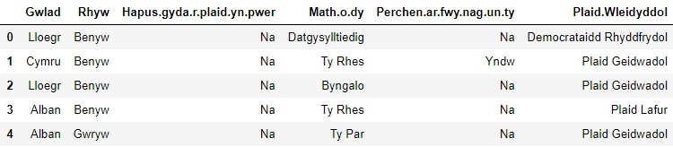

Yn y tiwtorial hwn fyddwn yn defnyddio set ddata o ryw etholiad sydd yn cynnwys y priodoleddau o 200 berson, y priodoleddau yw gwlad breswyl, rhyw, os yw’n hapus gyda’r blaid yn bwêr, math o dŷ sydd gennym ac os oes gennym fwy nag un tŷ. Mae’r set ddata ar gael ar y wefan https://dysgupeirianyddol.github.io/lawrlwythiadau/. I gychwyn dosbarthiad naïf Bayes yn Python mae rhaid llwytho’r pecyn pandas. Llwythwn y pecyn fel:
>>> import pandas as pd
Yna wnawn lwytho’r data. Yna fedrem weld y data gan ddefnyddio data.head().
>>> data = pd.read_csv('etholiad.csv')
>>> data.head()
Gwelwn fod pob priodoledd yn ddata wedi’i chategoreiddio sydd yn gadael ni ddefnyddio
Byddwn yn creu ddau ffwythiant, un i’r ddau debygolrwydd sy’n cael ei chynnwys yn y rhifiadur o’r fformiwla naïf Bayes. Mae’r ffwythiant cyntaf yn edrych ar y tebygolrwydd amodol, fydd y ffwythiant yn cymryd mewnbwn o blaid, colofn, gwerth y plyg ag y data defnyddiwn. Mae’r ffwythiant hefyd yn defnyddio cyfrifffug i wneud yn siŵr fydd yna ddim tebygolrwydd o faint 0 yn cael ei lluosi yn y lluoswm nes ymlaen.
>>> def tebygolrwydd_amodol(plaid, colofn, gwerth, data):
... rhifiadur = len(data[(data["Plaid.Wleidyddol"]==plaid)&(data[colofn]==gwerth)]) + 1
... enwadur = len(data[data["Plaid.Wleidyddol"]==plaid])+len(data[colofn].unique())
... return rhifiadur/enwadur
Ag isod mae gennym y ffwythiant ar gyfer cyfrifo’r tebygolrwydd o ryw blaid.
>>> def tebygolrwydd(plaid, data):
... return len(data[data["Plaid.Wleidyddol"]==plaid]) / len(data)
Yna i greu rhif pendant ar gyfer y rhifiadur o’r tebygolrwydd o bob plaid ac i ddewis yr uchafswm.
>>> def rhagfynegi(data, plyg):
... colofnau = data.columns[:-1]
... pleidiau = data['Plaid.Wleidyddol'].unique()
... tebygolrwyddau = {p: 1 for p in pleidiau}
... for plaid in pleidiau:
... for i, colofn in enumerate(colofnau):
... gwerth = plyg[i]
... tebygolrwyddau[plaid] *= tebygolrwydd_amodol(plaid, colofn, gwerth, data)
... tebygolrwyddau[plaid] *= tebygolrwydd(plaid, data)
... return max(tebygolrwyddau.keys(), key=lambda x: tebygolrwyddau[x])
Dyma’r plyg fyddem yn defnyddio i drio rhagfynegi ei blaid drwy ddosbarthu.
>>> plyg = ["Lloegr", "Benyw", "Na", "Ty Rhes", "Na"]
Gawn ni allbwn o blaid lafur o redeg y ffwythiant rhagfynegi ar ein plyg.
>>> rhagfynegi(data, plyg)
'Plaid Lafur'
Nawr wnawn drio plyg wahanol i’r algorithm drio rhagfynegi ei blaid.
>>> plyg = ["Lloegr", "Gwryw", "Yndw", "Ty Rhes", "Yndw"]
>>> rhagfynegi(data, plyg)
'Plaid Geidwadol'
Gwelwn drwy ddefnyddio’r algorithm ar blyg gwahanol cafodd ei ddosbarthu i Blaid Geidwadol.